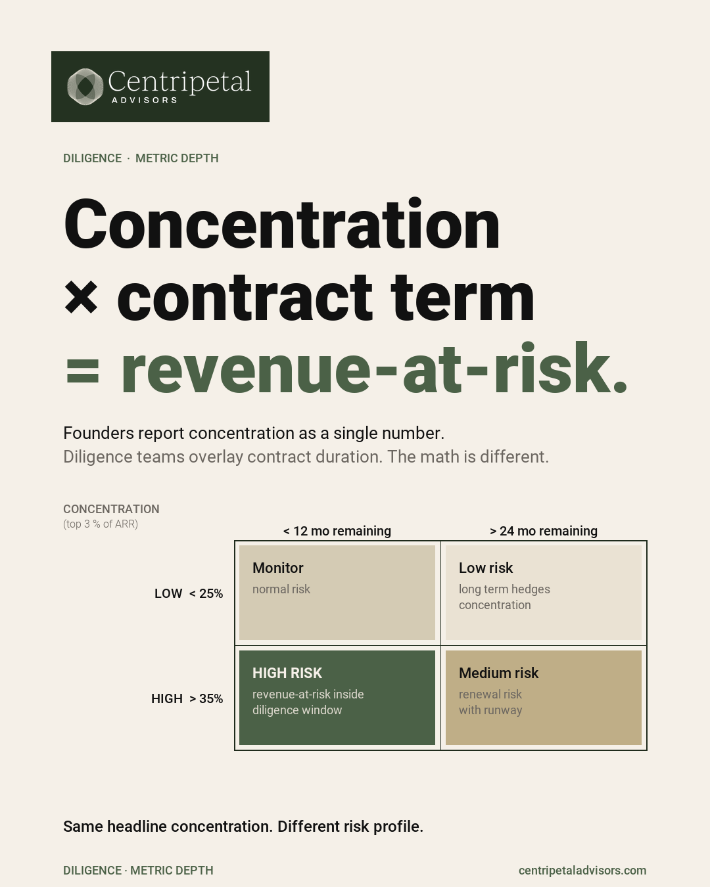

Why concentration matters more than founders expect
Customer concentration is the first thing most investors check after ARR. Not because concentration is inherently bad, but because the implications change depending on how the founder understands it.
A company where 40% of revenue comes from two accounts is not automatically uninvestable. But a company where the founder cannot explain why those two accounts are sticky, what the renewal terms look like, and what happens to the P&L if one churns — that company has a concentration problem.
What investors actually probe
They will ask for the top 1, top 5, and top 10 customer revenue shares. They will ask about contract length, renewal timing, pricing structure, and whether the largest customers were acquired through the same channel as the rest of the base.
The deeper question is whether concentration is a feature of the growth stage (early companies naturally have concentration) or a structural dependency the company has not diversified away from.

How to frame it honestly
If concentration is high, own it. Show the renewal history. Show the expansion revenue from those accounts. Show what the pipeline looks like for new logos that would reduce the ratio over the next 12 months.
The worst answer is a slide that minimizes the number. The second worst answer is a plan to reduce concentration that does not have a realistic timeline.
The board-level question
The question for the board is not 'is our concentration too high?' It is 'if our largest customer churned tomorrow, what would we do?' If the answer is clear and the team has modeled the scenario, concentration is a known risk. If the answer requires a pause, it is an unmanaged risk.
Frequently Asked Questions
What is a concerning level of customer concentration for SaaS?
How should a founder present customer concentration to investors?
What board question does customer concentration answer?
Put this into practice
Make the topic part of the operating cadence, not a one-time cleanup project. Assign one owner, identify the source system for every number, and decide how often the underlying schedule will be refreshed. The goal is a repeatable answer that does not change depending on who prepares the deck or which spreadsheet is open.
At each review, reconcile the operating view to the accounting view and document any difference. A useful review note states what changed, why it changed, whether the variance is timing or performance, and what decision follows. That discipline is what makes a metric or process usable in a board meeting, financing conversation, or diligence request.
Questions to resolve before the next review
- Who owns the number or process, and what system is the source of truth?
- What definition is used consistently across the model, reporting package, and board deck?
- Which variance would trigger a decision rather than another round of analysis?
- What supporting schedule should a lender or investor be able to inspect?
Want to pressure-test your concentration risk?
Schedule a Conversation